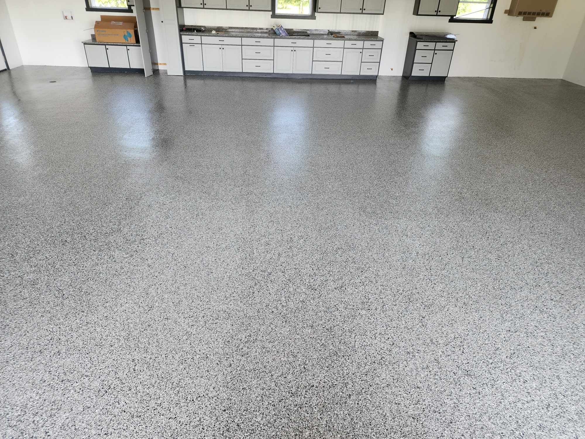
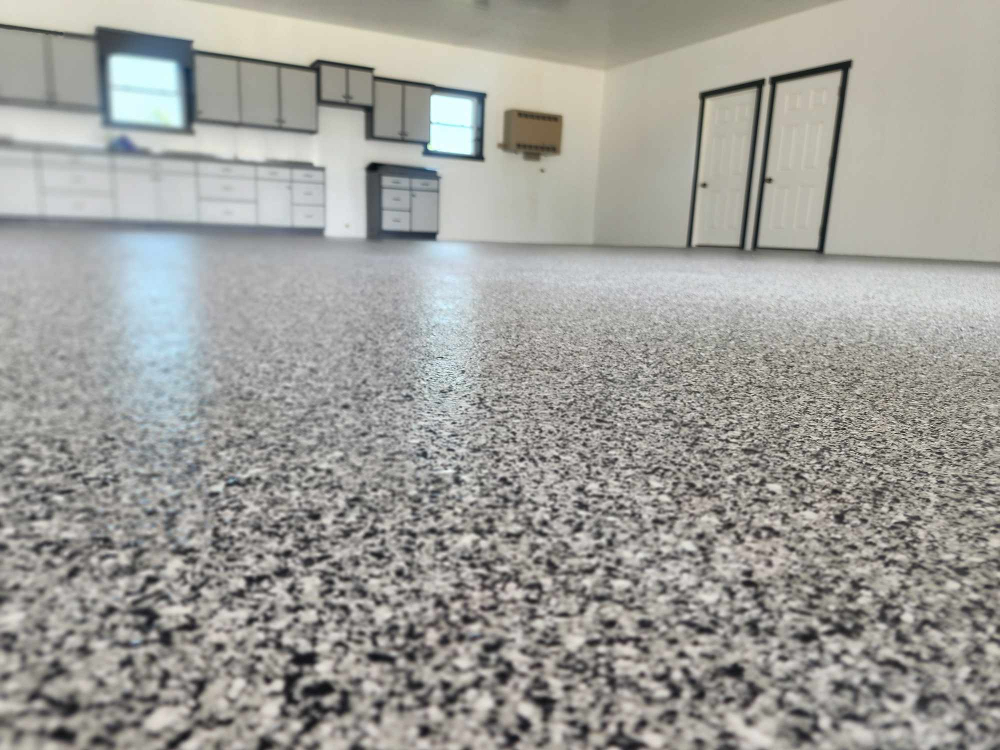
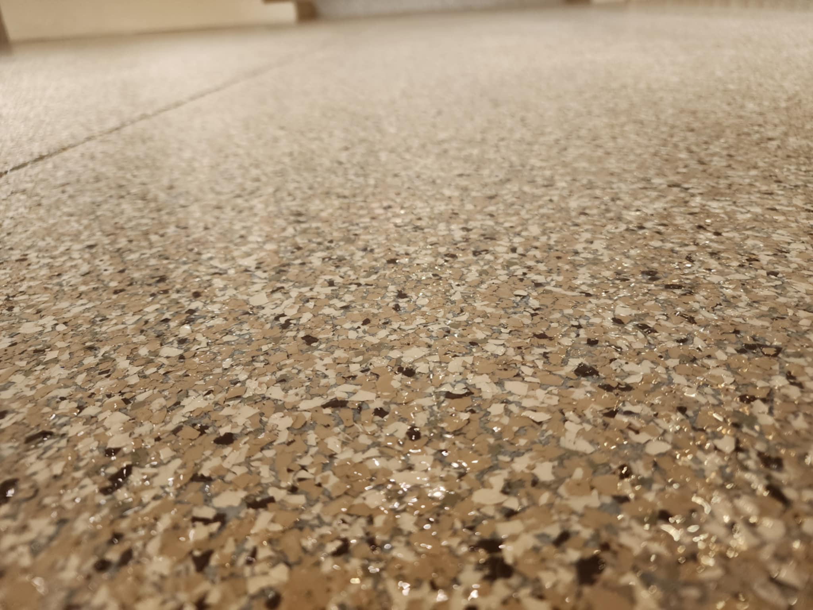

Commercial Floor Coatings — Built for Real Business Demands
Commercial floor coating is a fundamentally different challenge from residential. Your facility needs systems built to withstand forklifts, pallet jacks, chemical spills, constant heavy foot traffic, and the relentless daily abuse of real business operations — without peeling, chipping, or degrading under load.
Crete Creations LLC has been completing commercial floor coating projects throughout the Four State area for over 24 years. Warehouses, auto repair shops, car dealerships, restaurants and commercial kitchens, retail stores, churches, schools, government facilities, fire stations, and industrial manufacturing spaces. We understand what commercial concrete demands — and we design our systems for it.
Commercial Project Types
Warehouse and Industrial Floors
Heavy-duty polyaspartic and polyurea systems engineered for forklift and heavy equipment traffic, chemical resistance, and the specific demands of manufacturing, food processing, and distribution environments. Commercial-scale diamond grinding equipment. No shortcuts on preparation regardless of square footage.
Auto Shop and Dealership Floors
Chemical-resistant, non-porous systems that handle motor oil, transmission fluid, gasoline, brake fluid, battery acid, and constant vehicle traffic. Auto dealership showroom floors get premium treatment — because in that setting, the floor is part of the product experience.
Restaurant and Commercial Kitchen Floors
Appropriate anti-slip additives for wet kitchen environments. Thorough sealing to prevent bacterial growth. Resistance to commercial cleaning chemicals, grease, and the impact of constant foot traffic.
Church, School, and Municipal Facilities
Safe, easy-to-clean, visually appropriate for public occupancy. Gymnasium floors, cafeteria floors, hallways, mechanical rooms — we've coated them throughout the Four State area.
The Commercial Difference
Contact Arturo for a free commercial consultation anywhere in the Four State area. (417) 483-7082 or artvette68@yahoo.com.
Request a Commercial Floor Quote →

Serving the Four State area and surrounding communities.
Request Free Quote → 📞 (417) 483-7082 View Our Gallery Services Available✅ Polyaspartic Coatings
✅ Metallic Epoxy Floors
✅ Driveway Overlay Systems
✅ Decorative Overlays
✅ Commercial Floor Coatings
✅ Stamped & Stained Concrete
✅ Concrete Countertops
✅ Water Features
✅ Concrete Repair
📅 In Business Since 2000
⭐ 24+ Years Experience
🗺️ 75-Mile Service Radius
✅ On Time. On Budget. Always.